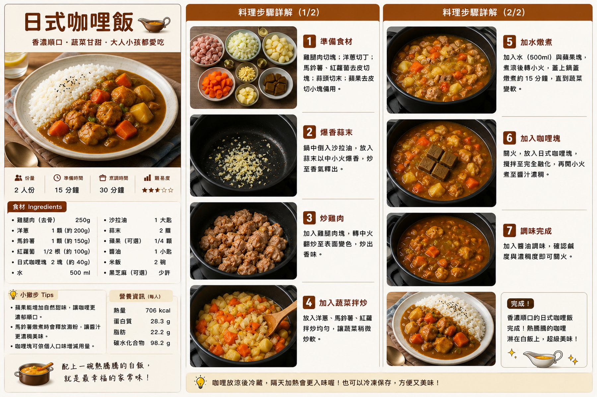

日式咖哩飯
雞腿肉、洋蔥、馬鈴薯與胡蘿蔔以日式咖哩塊慢煮，最後搭配熱騰騰白飯，咖哩濃郁順口、蔬菜甘甜，是經典家常日式料理。
食譜指南
點擊可放大檢視 🔍
料理步驟
共 7 步01
雞腿肉切成一口大小；洋蔥切丁；馬鈴薯與胡蘿蔔去皮後切塊；大蒜切末，白米飯先準備好。
02
炒鍋加入沙拉油，中火放入洋蔥與大蒜，炒至洋蔥變透明並略帶金黃色。
03
加入雞腿肉翻炒，將表面煎至微金黃色，讓雞肉帶出香氣。
04
放入馬鈴薯與胡蘿蔔翻炒約 2 分鐘，使蔬菜表面均勻裹上油香。
05
加入水，煮滾後撇去浮沫，轉小火並蓋上鍋蓋燉煮約 15 分鐘，直到馬鈴薯與胡蘿蔔變軟。
06
關火或轉最小火，加入咖哩塊攪拌至完全融化，再以小火煮約 5 分鐘，讓醬汁變濃順。
07
加入食鹽調整味道，確認雞肉熟透後關火；將熱白米飯盛入盤中，淋上日式咖哩即可享用。